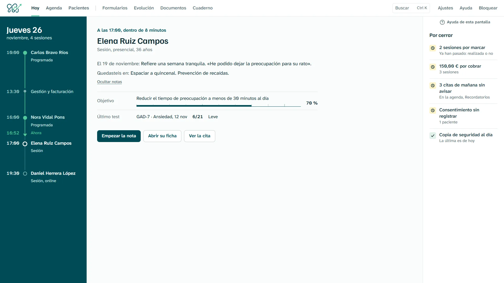

YKY › Agenda para psicólogos
Una agenda que sabe quién viene, quién ha pagado y qué bono le queda
Tu agenda, tus cobros y tus bonos en el mismo sitio, sin hojas de cálculo aparte. Pensada para una consulta individual.
Gratis por tiempo limitado Para psicólogas y psicólogos autónomos. Windows.
Dar citas rápido
- Vista de día, semana y mes, con citas semanales, quincenales o mensuales.
- Huecos libres según tu horario (también con jornada partida) y la duración de cada tipo de sesión, con un «Buscar hueco» para cuando te llaman.
- Bloqueos para formación, supervisión o vacaciones.
- Videollamada: el enlace de tu sala en cada cita online.

Cobros sin apuros
Cada cita lleva su estado de sesión (realizada, cancelada, no se presentó) y su cobro por separado. Así ves de un vistazo lo pendiente y no tienes que preguntar a nadie si te pagó.
- Bonos de sesiones con caducidad opcional. La sesión se descuenta al marcar la cita, y tú decides si cuentan las ausencias o las cancelaciones de última hora.
- Recibos con numeración correlativa y tu NIF.
- Ingresos por mes, trimestre o año, y un CSV para tu gestoría.
Recordatorios por WhatsApp, enviados por ti
YKY prepara el mensaje de recordatorio de las citas de mañana y abre WhatsApp con cada paciente. Lo envías tú: nada sale solo, y el mensaje no lleva datos de salud. Las citas avisadas quedan marcadas.
Recibos, no facturas. Si necesitas facturar, sigue haciéndolo con tu gestoría o tu programa de facturación.
Preguntas
¿Los recordatorios se envían solos?
No. YKY abre WhatsApp con el mensaje preparado y tú lo envías. Así no hace falta conectar ninguna cuenta.
¿Puedo exportar la agenda a mi calendario?
Sí, en un archivo .ics que por defecto lleva solo las iniciales y ninguna nota.
¿Hace facturas?
No. Emite recibos de pago con numeración propia, que no son facturas.
Míralo antes de decidir
En Instagram enseño YKY en vídeos cortos, con pantallas reales y pacientes inventados. Si te encaja, te lo enseño en 20 minutos por videollamada, solo lo que a ti te sirve.
Gratis por tiempo limitado Para Windows. Sin tarjeta ni permanencia.
Más para quien empieza por su cuenta
- Programa para psicólogos autónomosLo que necesita una consulta individual, sin lo que traen los programas para centros.
- Empezar tu consulta por tu cuentaUna lista práctica de lo que vas a tener que organizar, más allá de la terapia.
- Programa gratis para psicólogosQué incluye gratis, por qué es gratis y qué pasará después. Sin letra pequeña.
- Historia clínica de psicologíaNotas de sesión que se cierran de verdad, riesgo, objetivos y archivos, cifrados.
- Protección de datos para psicólogosQué te toca a ti, qué pone el programa y por qué tener las historias en tu ordenador.
- Tests en el móvil del pacientePHQ-9, GAD-7 o tus propios cuestionarios, rellenados en casa y recibidos cifrados.